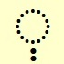

Lesson 3
The prefix vav וּמֹשֶׁהwords/_xx "and Moses"
Prefixes (at the beginning of a word)and ו, the הַ, to ל, in בּ , from מִ, like/as כּ These are the 6 Hebrew "words" which never occur as separate words but are always attached to the beginning of another word. These "words" occur more than 100,000 times in the Tanakh, so it's really important to learn them.
In this lesson we learn about the most frequently occurring "word" "and"
Words starting with ו
Hardly any words in the Tanakh actually have ו as their first letter.
וָוalefbet_consonants_and_vowels/vav meaning "a hook" occurs 20 times in Exodus (chapters 26,27,36,38) in descriptions of the Temple (or tent of meeting?), וַשְׁתִּיwords_plus/w000_vashti is the name of the queen in the book of Esther, there are a few more that each only occur once
Apart from these a word starting with vav is either the prefix "and" or a verb, about 50/50
In this lesson, prefix "and", next lessons, verbs starting with ו
the prefix vav "and"
The consonant וְ alefbet_consonants_and_vowels/v is often added to the beginning of a word. When it's added to any word except a verb it means "and". (And in fact, when it's added to a verb it's also often translated as "and".)
Examples:
בֵּן
boy
words/w013_ben
| alefbet_consonant_plus_vowel/vuh or alefbet_consonants_and_vowels/u | and |
אִישׁwords/w023_ish (a) man
וְאִישׁwords/w013_xx and a man
בֵּן words/w013_ben (a) son
וּבֶןwords/w013_uven and a son
מֹשֶׁהalefbet_people_places/Moshe Moses
וּמֹשֶׁהwords/_xx and Moses
|
וַיהוָהalefbet/vadonai
בְּנֵי יִשְׂרָאֵלwords/w000_bnei_yisrael the sons of Israel, the Israelites, the children of Israel
Other translations: "but", "now", "since", "meanwhile"
Which vowel?
alefbet_consonant_plus_vowel/vuh
וַ
alefbet_consonant_plus_vowel/va
alefbet_consonant_plus_vowel/u
וָ
alefbet_consonant_plus_vowel/va
וִי
alefbet_consonant_plus_vowel/vi
וֶ
alefbet_consonant_plus_vowel/vei
וֵ
alefbet_consonant_plus_vowel/ve
"and"
and (a) son
Sometimes וְ alefbet_consonants_and_vowels/v
added at the beginning of a word
becomes the vowel וּ alefbet_consonants_and_vowels/u
When this happens, the וּ alefbet_consonants_and_vowels/u
is always a separate syllable (ie, the next consonant in the word is the start of a new syllable.)
וְ alefbet_consonants_and_vowels/v becomes וּ alefbet_consonants_and_vowels/u when it's added at the beginning of words starting with:
בּ
(Note that the בּ alefbet_consonants_and_vowels/b becomes ב alefbet_consonants_and_vowels/v)
מ
פּ
(Note that the פּalefbet_consonants_and_vowels/p becomes פalefbet_consonants_and_vowels/f)

no content Exercise
no text yet